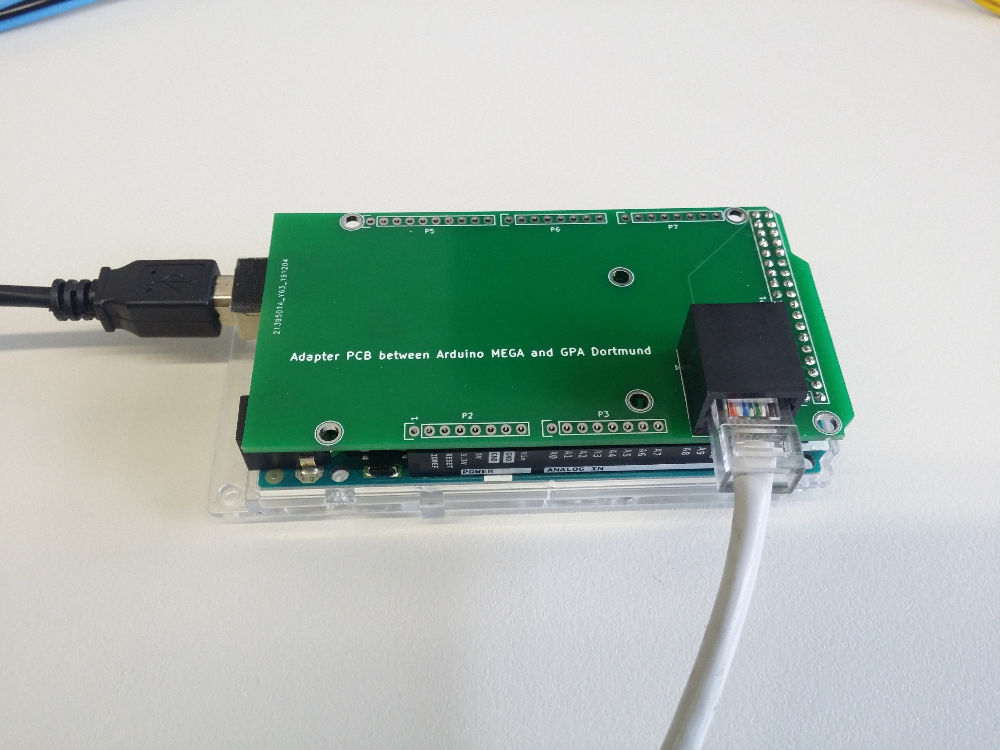

Connections¶
Connecting the PCB to the power supply¶
There are onboard voltage regulators for +12V and +5V. The only devices that use the input supply voltage (VCC) directly are the OPA549 power op amps. They have single supply maximum rating of 60 V. For most applications a VCC of 15 V is enough. However, if faster rise times are necessary or if the coils have a very high resistance, higher voltages might be necessary. It should be noted that a higher supply voltage causes higher heat losses in the power OP amps.
Connecting the PCB to the via SPI to the microcontroller¶
The GPA has a galvanically isolated SPI interface using the ISO7641 from Analog Devices to prevent any ground loops. The ISO7641 has separate power pins for both sides and can operate from 2.7, 3.3 and 5 V logic levels. The maximum supply voltage is 6 V. The maximum SPI speed is 150 Mbps, however the DAC80504 supports a maximum SPI clock of 50 MHz and the ADS8684 supports a maximum SPI clock of 16 MHz. The connector for the SPI is a standard RJ45 connector.
The pinout is:
Pin |
Color |
Function |
|---|---|---|
1 |
white/orange |
GND |
2 |
orange |
VDD |
3 |
white/green |
GND |
4 |
blue |
MCLK |
5 |
white/blue |
GND |
6 |
green |
MO |
7 |
white/brown |
_MSS |
8 |
brown |
MI |
The abbreviations are: MI (master in), MO (master out), MCLK (master clock), _MSS (chip select). _MSS low activates the DAC, _MSS high activates the ADC.
We have designed an Arduino shield to allow connecting the Arduino to the GPA via a standard network cable.
Connecting the PCB to the gradient coils (or dummy loads)¶
The coils or dummy loads should be connected to the GPA with at least AWG 16 wire.